Welcome to the R coding for Multidimensional Scaling.
For this code, we will use the package smacof (De Leeuw & Mair, 2009). Multidimensional scaling (MDS) is a family of scaling methods for discovering structures in multidimensional scaling. In this R code, we provide an overview of the most applicable codes to use for both analysis as for visualisation (like a two-dimensional graphical representation reflecting the map, see Kruskal & Wish, 1978).
The dataset and scaling
To start, select your columns from your dataset and save them in the subset MDselected.
Important, these columns have to be standardized. In doing so, save the standardized dataset in the subset MDS. This will be the dataset to use in the further analyses.
To check, ask a summary of your dataset to check whether the means are 0 (here, only the first 6 columns are shown). Use summary(MDS) to see the full dataset.
# select your variables
MDSselected <- data[,c(1:96)]
# scale your variables
MDS <- scale(MDSselected,scale=TRUE)
summary(MDS[,c(1:6)])## item1 item2 item3 item4
## Min. :-3.7327 Min. :-0.90611 Min. :-4.156 Min. :-1.3387
## 1st Qu.:-0.2220 1st Qu.:-0.90611 1st Qu.:-0.493 1st Qu.:-0.4405
## Median :-0.2220 Median : 0.07153 Median : 0.728 Median : 0.4576
## Mean : 0.0000 Mean : 0.00000 Mean : 0.000 Mean : 0.0000
## 3rd Qu.: 0.9482 3rd Qu.: 1.04918 3rd Qu.: 0.728 3rd Qu.: 0.4576
## Max. : 0.9482 Max. : 3.00446 Max. : 0.728 Max. : 2.2538
## item5 item6
## Min. :-0.8103 Min. :-2.2700
## 1st Qu.:-0.8103 1st Qu.:-0.5047
## Median : 0.1097 Median : 0.3779
## Mean : 0.0000 Mean : 0.0000
## 3rd Qu.: 0.1097 3rd Qu.: 0.3779
## Max. : 2.8698 Max. : 1.2606Dissimilarity matrix
To make the input of the MDS, a dissimilarity matrix is made based on the Euclidean distances.
# load packages
# to install, use install.packages('MASS')
library(MASS)
library(stats)
library(smacof)
# calculate dissimilarity matrice based on Euclidean space
distMDS <- dist(t(MDS))
MDSresult <- mds(distMDS)
MDSresult##
## Call:
## mds(delta = distMDS)
##
## Model: Symmetric SMACOF
## Number of objects: 96
## Stress-1 value: 0.359
## Number of iterations: 151Scaling the dissimilarities
An important MDS issue in practice concerns the scale level we want to assign to the dissimilarities.
- The interval scale level: a linear transformation where the ratio of differences of distances should be equal to the corresponding ratio of differences in the data;
- The ordinal scale level: the most popular approach, especially in the Social Sciences, where transformations preserve the rank order of the dissimilarities;
- The Spline scale level: an I-spline (integrated spline) transformation with fixed number of knots and spline degree.
fit.interval <- mds(distMDS, type = "interval")
fit.ordinal1 <- mds(distMDS, type = "ordinal", ties = "primary")
fit.ordinal2 <- mds(distMDS, type = "ordinal", ties = "secondary")
fit.spline <- mds(distMDS, type = "mspline", spline.intKnots = 3,spline.degree = 2)These transformations can be nicely shown in a Shepard diagram (a scatterplot between the dissimilarities and the configuration distances).
op <- par(mfrow = c(2,2))
p1 <- plot(fit.interval, plot.type = "Shepard",
main = "Shepard Diagram (Interval MDS)", ylim = c(0.1, 1.7))
p2 <- plot(fit.ordinal1, plot.type = "Shepard",
main = "Shepard Diagram (Ordinal MDS, Primary)", ylim = c(0.1, 1.7))
p3 <- plot(fit.ordinal2, plot.type = "Shepard",
main = "Shepard Diagram (Ordinal MDS, Secondary)", ylim = c(0.1, 1.7))
p4 <- plot(fit.spline, plot.type = "Shepard",
main = "Shepard Diagram (Spline MDS)", ylim = c(0.1, 1.7))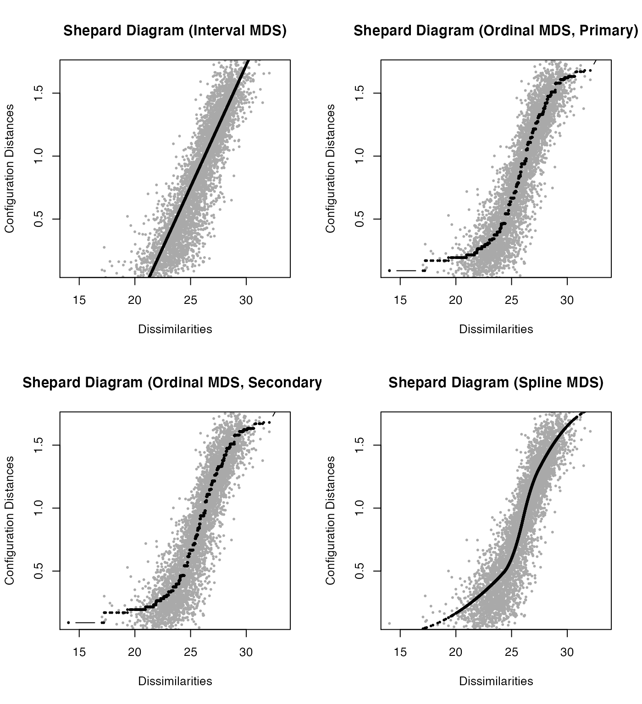
Plot the disparities distances against the fitted distances.
op <- par(mfrow = c(2,2))
p1 <- plot(fit.interval, plot.type = "resplot",
main = "Interval MDS")
p2 <- plot(fit.ordinal1, plot.type = "resplot",
main = "Ordinal MDS, Primary")
p3 <- plot(fit.ordinal2, plot.type = "resplot",
main = "Ordinal MDS, Secondary")
p4 <- plot(fit.spline, plot.type = "resplot",
main = "Spline MDS")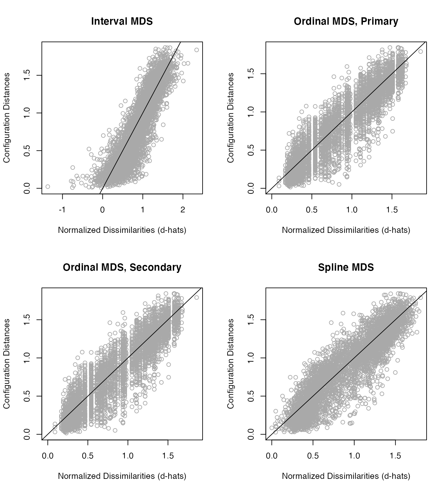
Plot the stress contribution in of each observation.
The higher the contribution, the worse the fit.
op <- par(mfrow = c(2,2))
p1 <- plot(fit.interval, plot.type = "stressplot",
main = "Interval MDS")
p2 <- plot(fit.ordinal1, plot.type = "stressplot",
main = "Ordinal MDS, Primary")
p3 <- plot(fit.ordinal2, plot.type = "stressplot",
main = "Ordinal MDS, Secondary")
p4 <- plot(fit.spline, plot.type = "stressplot",
main = "Spline MDS")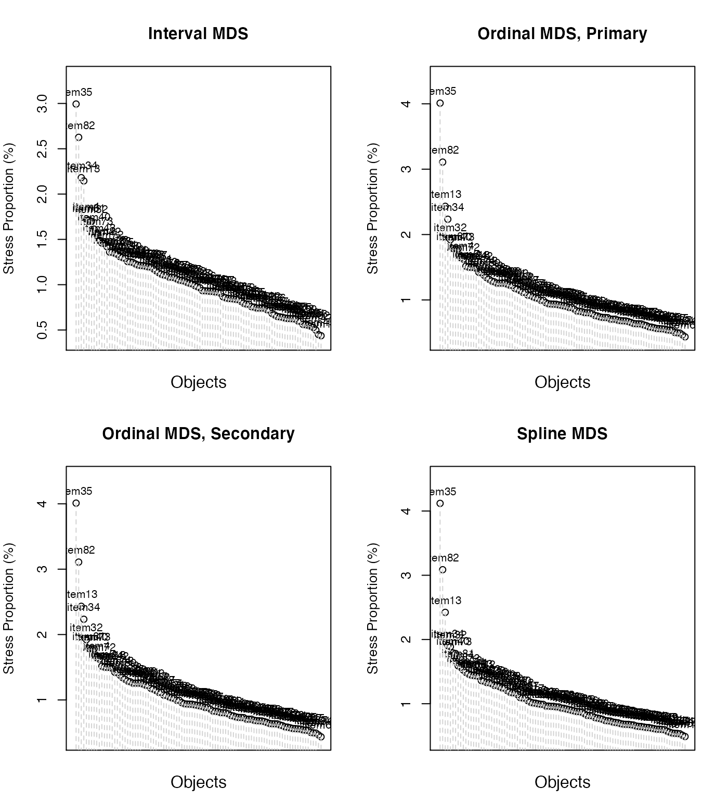
The 2D map of MDS configuration, plotted against the first two largest dimensions, is shown here:
op <- par(mfrow = c(2,2))
p1 <- plot(fit.interval, plot.type = "confplot",
main = "Interval MDS")
p2 <- plot(fit.ordinal1, plot.type = "confplot",
main = "Ordinal MDS, Primary")
p3 <- plot(fit.ordinal2, plot.type = "confplot",
main = "Ordinal MDS, Secondary")
p4 <- plot(fit.spline, plot.type = "confplot",
main = "Spline MDS")Linear restrictions
The confirmatory MDS refers to an external constraint on the configuration matrix. For instance, there could be a substantive underlying theory regarding a decomposition of the dissimilarities, like a circle.
fit.basic <- mds(distMDS, type = "ordinal")
fit.basic##
## Call:
## mds(delta = distMDS, type = "ordinal")
##
## Model: Symmetric SMACOF
## Number of objects: 96
## Stress-1 value: 0.19
## Number of iterations: 39
fit.circ <- smacofSphere(distMDS, type = "ordinal", verbose = FALSE)
fit.circ##
## Call: smacofSphere(delta = distMDS, type = "ordinal", verbose = FALSE)
##
## Model: Spherical SMACOF
## Number of objects: 96
##
## Stress-1 value: 0.212
## Number of iterations: 104By looking at the stress values we see that the restricted solution (stress-1: 0.212) is not much worse than the unrestricted solution (stress-1: 0.19).
op <- par(mfrow = c(1,2))
plot(fit.basic,main="unrestricted MDS")
plot(fit.circ, main="restricted MDS")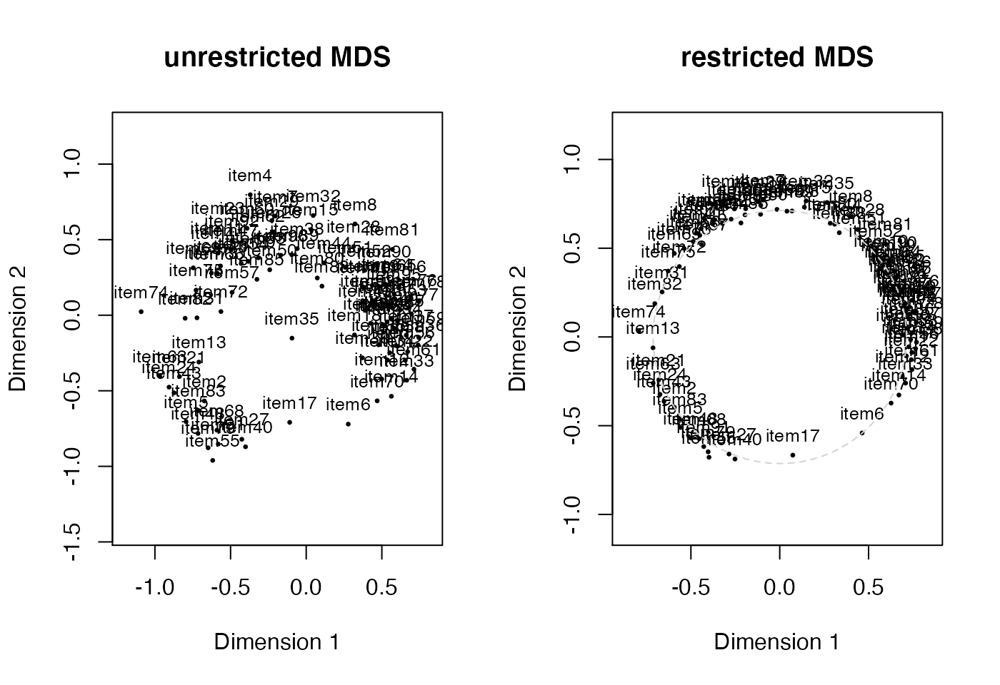
Setting for 2D plot
First, we extract the coordinates of the columns of our 2D MDS configuration plot.
Next, we add a variable Names to this subset including the names to which the item initially belongs.
coord <- as.data.frame((fit.ordinal1$conf)*-1) # parameter *-1 added to change direction of dimensions
# If only one dimension has to shift horizontally:
# coord$D1 <- (coord$D1)*-1
coord$items <- rownames(coord)
coord$Names <- c('group1','group2','group3','group4','group2','group1','group4',
'group3','group1','group3','group4','group1','group2','group1',
'group4','group3','group2','group1','group3','group4','group2',
'group1','group4','group2','group1','group4','group2','group3',
'group4','group1','group2','group4','group1','group3','group4',
'group3','group1','group3','group1','group2','group4','group1',
'group2','group3','group4','group1','group4','group2','group1',
'group4','group3','group3','group1','group4','group2','group3',
'group2','group3','group1','group4','group1','group4','group2',
'group3','group1','group4','group1','group2','group4','group1',
'group3','group2','group4','group2','group4','group3','group1',
'group1','group2','group4','group3','group4','group2','group1',
'group4','group3','group1','group4','group3','group1','group2',
'group4','group2','group1','group3','group4')
head(coord)## D1 D2 items Names
## item1 -0.5527530 0.24847540 item1 group1
## item2 0.6731546 0.56734038 item2 group2
## item3 -0.4400060 -0.09707478 item3 group3
## item4 0.3699579 -0.79721826 item4 group4
## item5 0.7943466 0.70409123 item5 group2
## item6 -0.2779827 0.72057760 item6 group1Different settings are possible.
library(dplyr)
library(ggplot2)
library(ggalt)
library(ggforce)
# basis plot
p <- ggplot(coord, aes(x=D1, y=D2)) +
geom_point(size=3)+
theme_classic()+
ylim(-1,1)
p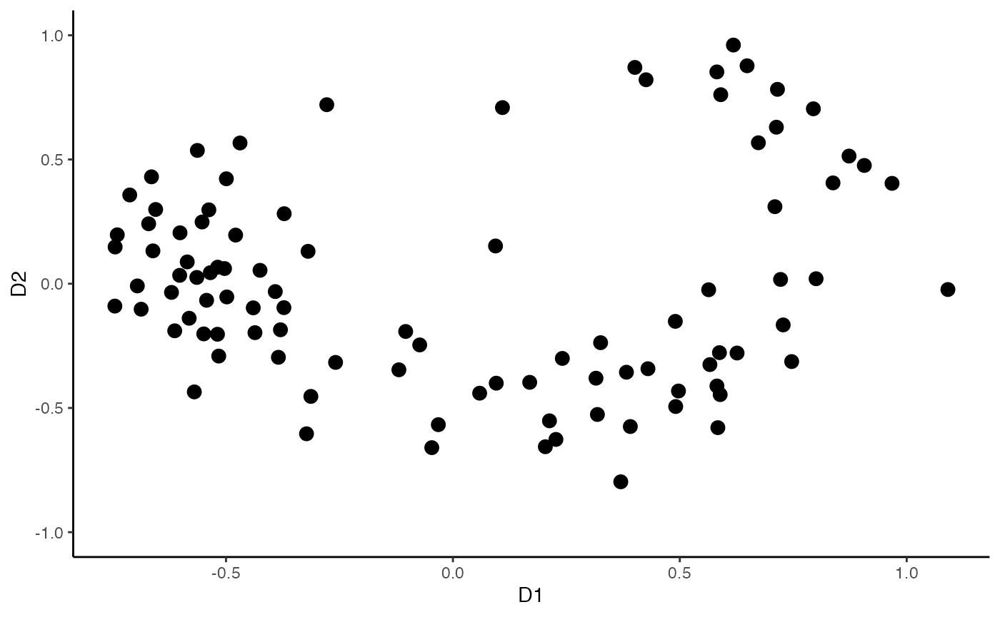
# add color and shape for levels of the variable Names
p0 <- ggplot(coord, aes(x=D1, y=D2, color=Names,shape=Names)) +
geom_point(size=3)+
theme_classic()+
ylim(-1,1)
p0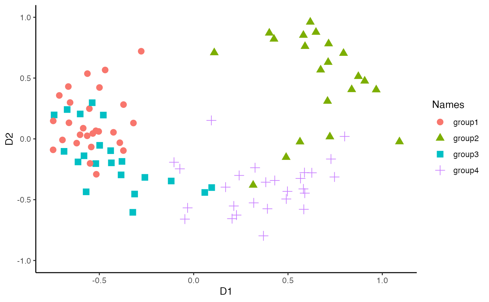
# add more than 6 shapes
p1 <- ggplot(coord, aes(x=D1, y=D2, color=Names,shape=Names)) +
geom_point(size=3)+
scale_shape_manual(values=1:nlevels(as.factor(coord$Names)))+
theme_classic()+
ylim(-1,1)
p1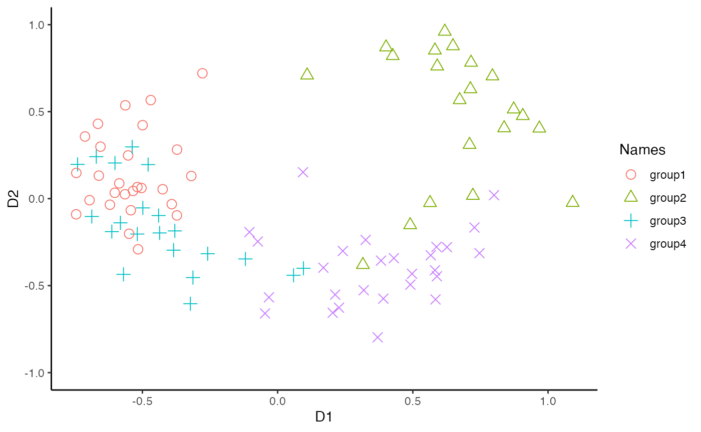
# specify the shapes by yourself
p2 <- ggplot(coord, aes(x=D1, y=D2, color=Names,shape=Names)) +
geom_point(size=3)+
scale_shape_manual(values=c(0,15,21,25))+
theme_classic()+
ylim(-1,1)
p2
The different shapes are:

# add regions
p3 <- p2 + ggforce::geom_mark_hull(aes(color=Names, fill = Names),
concavity = 5,
expand=0,
radius=0)## Warning: The concaveman package is required for geom_mark_hull
p3
# add labels to the regions
p4 <- p2 + ggforce::geom_mark_hull(aes(label = Names, color = Names,fill=Names),
concavity = 5,
expand=0,
radius=0)## Warning: The concaveman package is required for geom_mark_hull
p4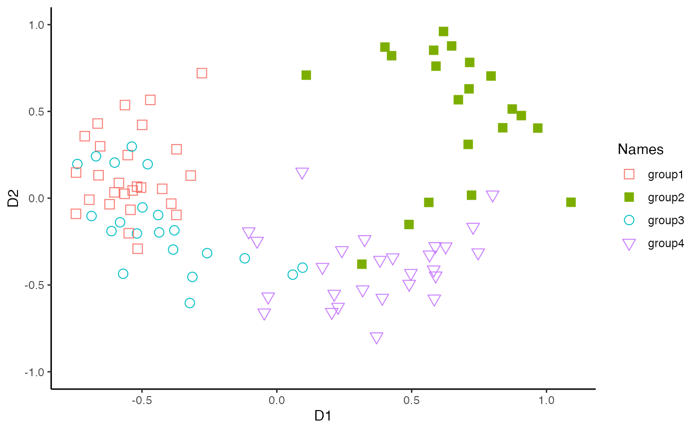
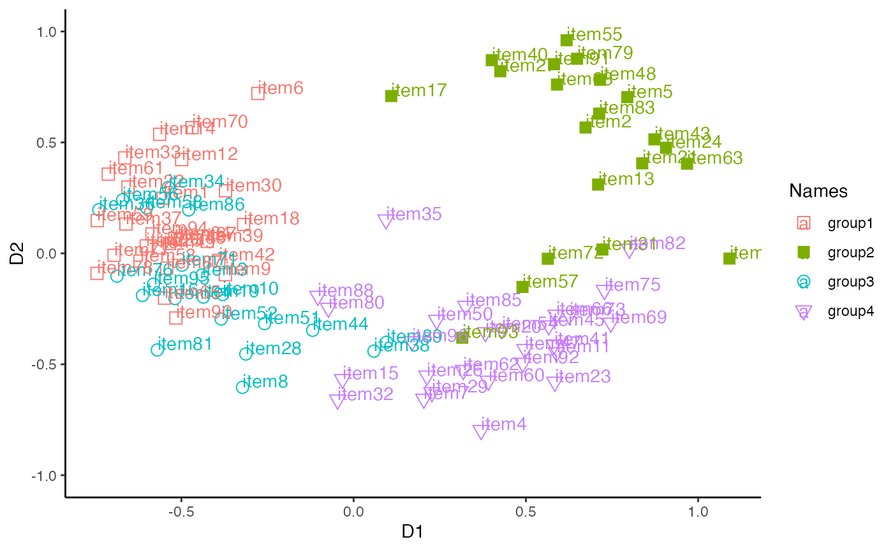
# add black labels of items
p6 <- p3 + geom_text(aes(label=items), hjust=0, vjust=0, color='black')
p6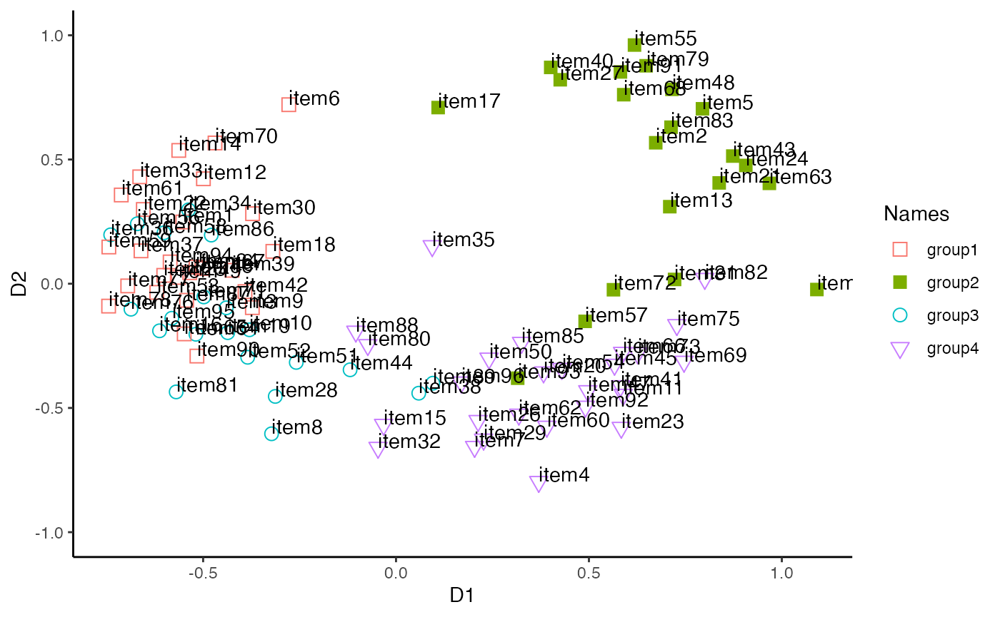
# change colors by your own preference
p7 <- p3 + scale_color_manual(values=c("grey", "red", "#9633FF", "#E2FF33"))+
scale_fill_manual(values=c("grey", "red", "#9633FF", "#E2FF33"))
p7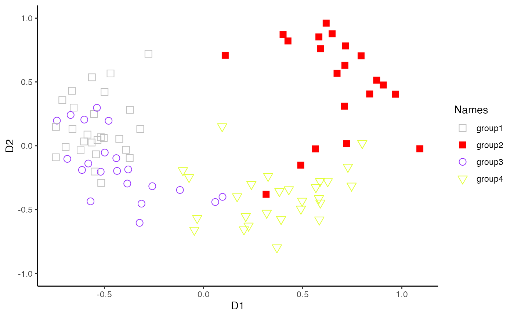
# use ggplot color pallets.
p8 <- p3 + scale_color_brewer(palette="Dark2") +
scale_fill_brewer(palette="Dark2")
p8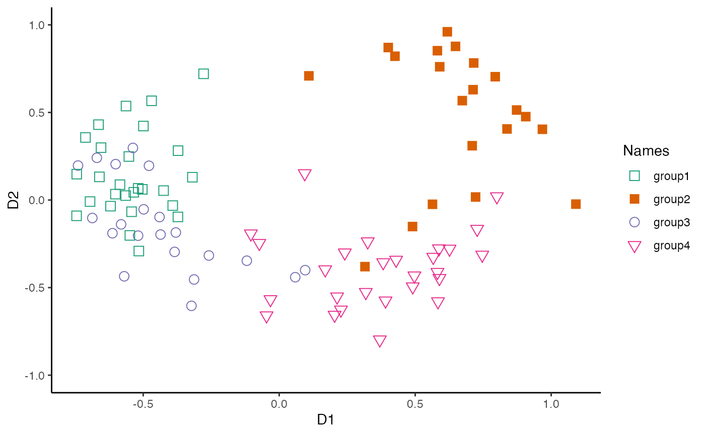
The different pallets are:

# use ggplot color pallets in black and white
p9 <- p3 + scale_color_grey(start = 0.8, end = 0.2)+
scale_fill_grey(start = 0.8, end = 0.2)
p9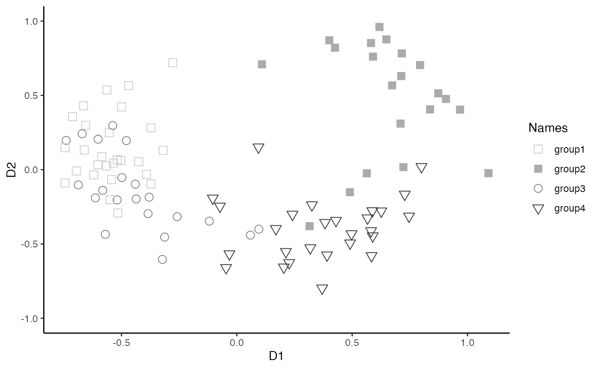